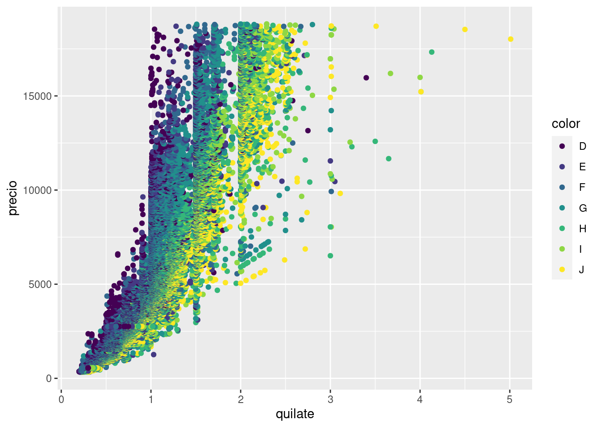
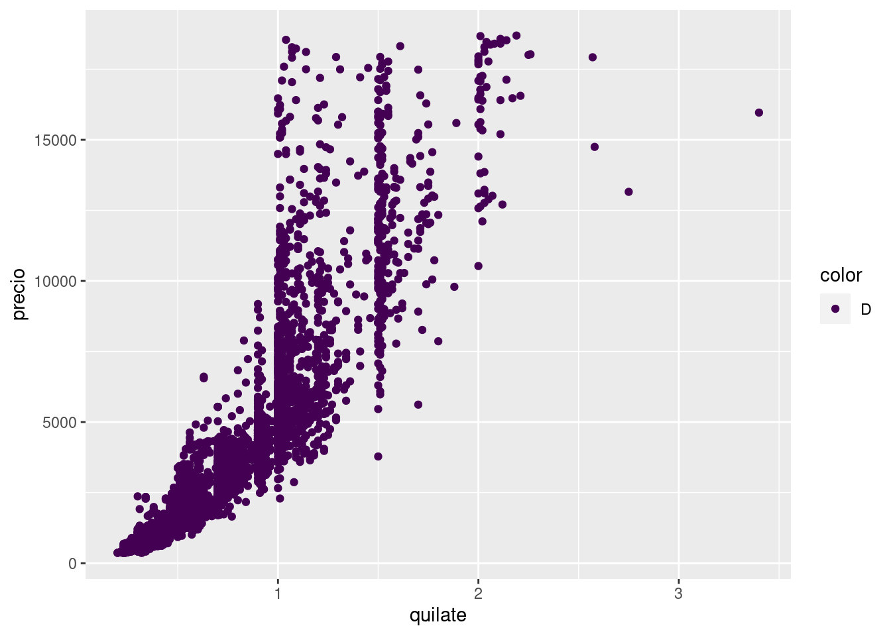
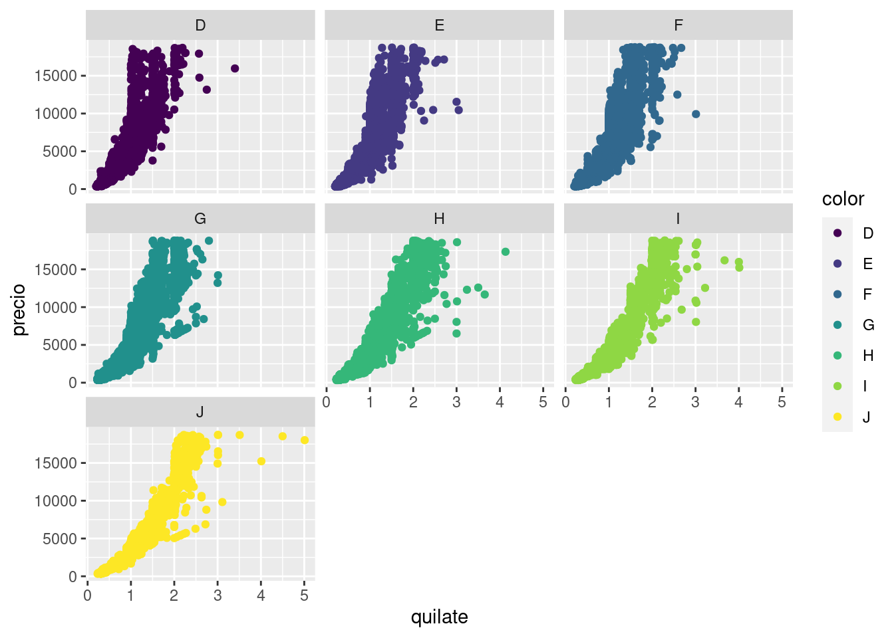
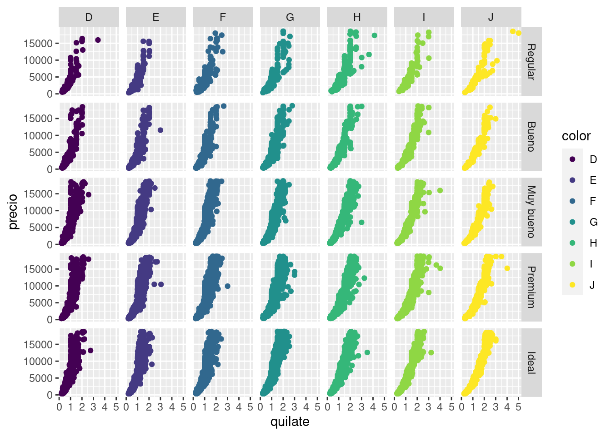

Graficando en múltiples paneles
Es posible graficar más de dos variables en un gráfico mapeando una variable al color o por ejemplo el tipo de línea o linetype
library(ggplot2)
library(dplyr)
library(datos)
ggplot(diamantes, aes(quilate, precio)) +
geom_point(aes(color = color))

En este caso no solo visualizamos la relación entre el precio y el quilate del diamante, también podemos ver que rol juega el color. También podríamos haber intentando resolver el problema generando un gráfico por cada color filtrando las observaciones correspondientes.
diamantes %>%
filter(color == "D") %>%
ggplot(aes(quilate, precio)) +
geom_point(aes(color = color))

facet_wrap()
Pero sería muchísimo trabajo si tenemos que hacer esto para cada una de las 7 categorías de color. La buena noticia es que {ggplot2} tiene un par de funciones justo para resolver este problema:
ggplot(diamantes, aes(quilate, precio)) +
geom_point(aes(color = color)) +
facet_wrap(~color)

Esta nueva capa con facet_wrap() divide al gráfico inicial en 7 paneles o facets, uno por cada color. Esta función requiere saber que variable será la responsable de separar los paneles y para eso se usa la notación de funciones de R: ~color. Esto se lee como generar paneles “en función del color”.
facet_grid()
¿Y si quisiéramos generar paneles a partir de 2 variables? Para eso existe facet_grid(). En este gráfico generamos paneles viendo la “relación entre el corte y el color” y por ejemplo en el primer panel arriba a la izquierda podremos observar los diamantes que son al mismo tiempo de color D y corte Regular. En este caso mapear la variable color al color de los diamantes no parece ser necesario ya que cada columna ya nos permite identificar eso, sin embargo en algunos casos ayuda a leer el gráfico más rápido.
ggplot(diamantes, aes(quilate, precio)) +
geom_point(aes(color = color)) +
facet_grid(corte~color)

Esté ejemplo es parte de un curso más largo para aprender R desde Cero, podés encontrarlo en: https://paocorrales.github.io/deExcelaR/
LS0tCnRpdGxlOiAiVW4gcG9zdCBkZSBlamVtcGxvIgphdXRob3I6ICJQYW8gQ29ycmFsZXMiCmRhdGU6ICIxMS8yMS8yMDIwIgpvdXRwdXQ6CiAgaHRtbF9kb2N1bWVudDoKICAgIGNvZGVfZG93bmxvYWQ6IHRydWUKICAgIHRvYzogdHJ1ZQogICAgdG9jX2Zsb2F0OiB0cnVlCi0tLQoKYGBge3Igc2V0dXAsIGluY2x1ZGU9RkFMU0V9CmtuaXRyOjpvcHRzX2NodW5rJHNldCgKCWVjaG8gPSBUUlVFLAoJbWVzc2FnZSA9IEZBTFNFLAoJd2FybmluZyA9IEZBTFNFCikKYGBgCgojIyBHcmFmaWNhbmRvIGVuIG3Dumx0aXBsZXMgcGFuZWxlcwoKRXMgcG9zaWJsZSBncmFmaWNhciBtw6FzIGRlIGRvcyB2YXJpYWJsZXMgZW4gdW4gZ3LDoWZpY28gKm1hcGVhbmRvKiB1bmEgdmFyaWFibGUgYWwgYGNvbG9yYCBvIHBvciBlamVtcGxvIGVsIHRpcG8gZGUgbMOtbmVhIG8gYGxpbmV0eXBlYAoKYGBge3J9CmxpYnJhcnkoZ2dwbG90MikKbGlicmFyeShkcGx5cikKbGlicmFyeShkYXRvcykKCmdncGxvdChkaWFtYW50ZXMsIGFlcyhxdWlsYXRlLCBwcmVjaW8pKSArCiAgZ2VvbV9wb2ludChhZXMoY29sb3IgPSBjb2xvcikpCmBgYAoKRW4gZXN0ZSBjYXNvIG5vIHNvbG8gdmlzdWFsaXphbW9zIGxhIHJlbGFjacOzbiBlbnRyZSBlbCBwcmVjaW8geSBlbCBxdWlsYXRlIGRlbCBkaWFtYW50ZSwgdGFtYmnDqW4gcG9kZW1vcyB2ZXIgcXVlIHJvbCBqdWVnYSBlbCBjb2xvci4gVGFtYmnDqW4gcG9kcsOtYW1vcyBoYWJlciBpbnRlbnRhbmRvIHJlc29sdmVyIGVsIHByb2JsZW1hIGdlbmVyYW5kbyB1biBncsOhZmljbyBwb3IgY2FkYSBjb2xvciBmaWx0cmFuZG8gbGFzIG9ic2VydmFjaW9uZXMgY29ycmVzcG9uZGllbnRlcy4KCmBgYHtyfQpkaWFtYW50ZXMgJT4lIAogIGZpbHRlcihjb2xvciA9PSAiRCIpICU+JSAKICBnZ3Bsb3QoYWVzKHF1aWxhdGUsIHByZWNpbykpICsKICBnZW9tX3BvaW50KGFlcyhjb2xvciA9IGNvbG9yKSkKCmBgYAoKIyMjIGBmYWNldF93cmFwKClgCgpQZXJvIHNlcsOtYSBtdWNow61zaW1vIHRyYWJham8gc2kgdGVuZW1vcyBxdWUgaGFjZXIgZXN0byBwYXJhIGNhZGEgdW5hIGRlIGxhcyA3IGNhdGVnb3LDrWFzIGRlIGNvbG9yLiBMYSBidWVuYSBub3RpY2lhIGVzIHF1ZSB7Z2dwbG90Mn0gdGllbmUgdW4gcGFyIGRlIGZ1bmNpb25lcyBqdXN0byBwYXJhIHJlc29sdmVyIGVzdGUgcHJvYmxlbWE6CgpgYGB7cn0KZ2dwbG90KGRpYW1hbnRlcywgYWVzKHF1aWxhdGUsIHByZWNpbykpICsKICBnZW9tX3BvaW50KGFlcyhjb2xvciA9IGNvbG9yKSkgKwogIGZhY2V0X3dyYXAofmNvbG9yKQpgYGAKCkVzdGEgbnVldmEgY2FwYSBjb24gYGZhY2V0X3dyYXAoKWAgZGl2aWRlIGFsIGdyw6FmaWNvIGluaWNpYWwgZW4gNyBwYW5lbGVzIG8gKmZhY2V0cyosIHVubyBwb3IgY2FkYSBjb2xvci4gRXN0YSBmdW5jacOzbiByZXF1aWVyZSBzYWJlciBxdWUgdmFyaWFibGUgc2Vyw6EgbGEgcmVzcG9uc2FibGUgZGUgc2VwYXJhciBsb3MgcGFuZWxlcyB5IHBhcmEgZXNvIHNlIHVzYSBsYSAqKm5vdGFjacOzbiBkZSBmdW5jaW9uZXMqKiBkZSBSOiBgfmNvbG9yYC4gRXN0byBzZSBsZWUgY29tbyBnZW5lcmFyIHBhbmVsZXMgKiJlbiBmdW5jacOzbiBkZWwgY29sb3IiKi4KCiMjIyBgZmFjZXRfZ3JpZCgpYAoKwr9ZIHNpIHF1aXNpw6lyYW1vcyBnZW5lcmFyIHBhbmVsZXMgYSBwYXJ0aXIgZGUgMiB2YXJpYWJsZXM/IFBhcmEgZXNvIGV4aXN0ZSBgZmFjZXRfZ3JpZCgpYC4gRW4gZXN0ZSBncsOhZmljbyBnZW5lcmFtb3MgcGFuZWxlcyB2aWVuZG8gbGEgKiJyZWxhY2nDs24gZW50cmUgZWwgY29ydGUgeSBlbCBjb2xvciIqIHkgcG9yIGVqZW1wbG8gZW4gZWwgcHJpbWVyIHBhbmVsIGFycmliYSBhIGxhIGl6cXVpZXJkYSBwb2RyZW1vcyBvYnNlcnZhciBsb3MgZGlhbWFudGVzIHF1ZSBzb24gYWwgbWlzbW8gdGllbXBvIGRlIGNvbG9yIEQgeSBjb3J0ZSBSZWd1bGFyLiBFbiBlc3RlIGNhc28gKm1hcGVhciogbGEgdmFyaWFibGUgY29sb3IgYWwgY29sb3IgZGUgbG9zIGRpYW1hbnRlcyBubyBwYXJlY2Ugc2VyIG5lY2VzYXJpbyB5YSBxdWUgY2FkYSBjb2x1bW5hIHlhIG5vcyBwZXJtaXRlIGlkZW50aWZpY2FyIGVzbywgc2luIGVtYmFyZ28gZW4gYWxndW5vcyBjYXNvcyBheXVkYSBhIGxlZXIgZWwgZ3LDoWZpY28gbcOhcyByw6FwaWRvLiAKCmBgYHtyfQpnZ3Bsb3QoZGlhbWFudGVzLCBhZXMocXVpbGF0ZSwgcHJlY2lvKSkgKwogIGdlb21fcG9pbnQoYWVzKGNvbG9yID0gY29sb3IpKSArCiAgZmFjZXRfZ3JpZChjb3J0ZX5jb2xvcikKYGBgCgoKRXN0w6kgZWplbXBsbyBlcyBwYXJ0ZSBkZSB1biBjdXJzbyBtw6FzIGxhcmdvIHBhcmEgYXByZW5kZXIgUiBkZXNkZSBDZXJvLCBwb2TDqXMgZW5jb250cmFybG8gZW46IFtodHRwczovL3Bhb2NvcnJhbGVzLmdpdGh1Yi5pby9kZUV4Y2VsYVIvXShodHRwczovL3Bhb2NvcnJhbGVzLmdpdGh1Yi5pby9kZUV4Y2VsYVIvKQo=